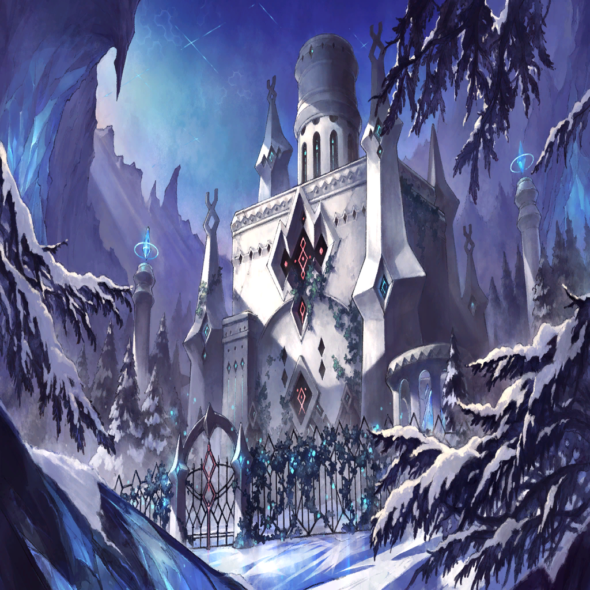

Ambrosia

Quence
Quence
Ambrosia

Quence

Waginau
Waginau
Waginau
Waginau
Waginau
Waginau
| |
|  | |
| Zafeiris | Enough! |
| Claybelle | Heh...heheh. I must say, you are dreadfully strong, even with perplexity ailing your mind. |
| Zafeiris | I've been trained as such. |
| Claybelle | Bear in mind, though, that perplexity—that uncertainty—will inevitably bring you harm if left unchecked. |
| Zafeiris | ... |
| Claybelle | So, once again, I ask: What do you want to do? What do you fight for? If you can't find your answer to these questions— |
| Zafeiris | I will protect Lil. No matter what, till the end of this journey. That's all there is to it. There is no uncertainty there. |
| Claybelle | All right. For now, I'm perfectly willing to accept that. Thank you. |
| Claybelle | Your dear daughter is at my mansion. Go to her. |
| Zafeiris | She's...not actually my daughter. You know this, right? |
| Claybelle | ... |
| Claybelle | The minutest release of my powers, and this is the result... I may be closer to the end of my own journey than I initially thought. |
| Claybelle | Zafeiris. There's little I can do for you with the time I have left. |
| Claybelle | I pray you find your reason to save the world, while I'm still around to help guide you on the right path. |
| |
| Zafeiris | Lil! Are you here? |
| Lil' | Zafeiris! |
| Zafeiris | Are you all right? Did anyone hurt you? |
| Lil' | I'm fine! Sia and Quence have been very nice to me! |
| Zafeiris | Who? |
Ambrosia |
Oh, hello. My name is Ambrosia. I'm a witch in training. It's nice to meet you. |
Quence |
I'm Quence. So you're this little lady's guardian? |
Quence |
Gotta say, you don't look the part. |
| Zafeiris | Thank you for taking care of Lil. |
Ambrosia |
Not a problem! Please, there's no need to bow! It sort of just...happened. I absolutely didn't do anything worthy of receiving a dragon's gratitude. |
| Lil' | Sia's my friend now! |
| Zafeiris | I see. |
| Zafeiris | (Friends, huh? Could a dragon and human truly share that sense of companionship?) |
| Zafeiris | (Or perhaps it's because she can, that Lil is to be our hope...) |
| Lil' | Zafeiris? |
| Zafeiris | Ah, it's nothing, Lil. |
| Lil' | Okay? |
| Zafeiris | You are to set out on a journey from here. You must see the many lands of this world, and come to know the lives and livelihoods of humans and dragons alike. |
| Zafeiris | Then, you must make a choice regarding this world's future. |
| Lil' | Uh, okay. I'll do my best! |
| Zafeiris | (I can't help but wonder, am I asking something cruel of her? This world is by no means an amicable place.) |
| Zafeiris | (Both humans and dragons have flaws that run deep.) |
| |
| |
| Zafeiris | (Is this world truly worth saving, such as it is?) |
| Zafeiris | (I'm not so sure.) |
Quence |
... |
| Zafeiris | That which you just saw is but a fragment of what made me who I am now. They were memories of a past long since lost to the sands of time. |
Waginau |
I could feel the sensation of your dragon power, surging through my body... The instinctive logic of motion in combat... There was much in there for me to learn. |
Waginau |
... |
Waginau |
So this was the beginning of your travels with that girl? |
| Zafeiris | Yes. Though, everything beyond that beginning has been a journey of perpetual loss. |
| Zafeiris | From the many encounters and bonds formed, to the very moment they all became meaningless... |
| Zafeiris | To me, these memories are nothing more than a retracing of the first moments of an unspeakable tragedy. |
| Zafeiris | But for you, there may be some important new discoveries to unearth. |
| Zafeiris | You must dive deeper. Further within my memories, you will find the power you seek. |
Waginau |
Right. I suppose there's no time to hesitate, then. |
Waginau |
Show me, Zafeiris. Show me your past despair. I will do what I can to give it meaning and purpose. |
Waginau |
Surely there is something within it that can help me save Nimul! |
| Zafeiris | Very well. I shall open another gate of memories. |